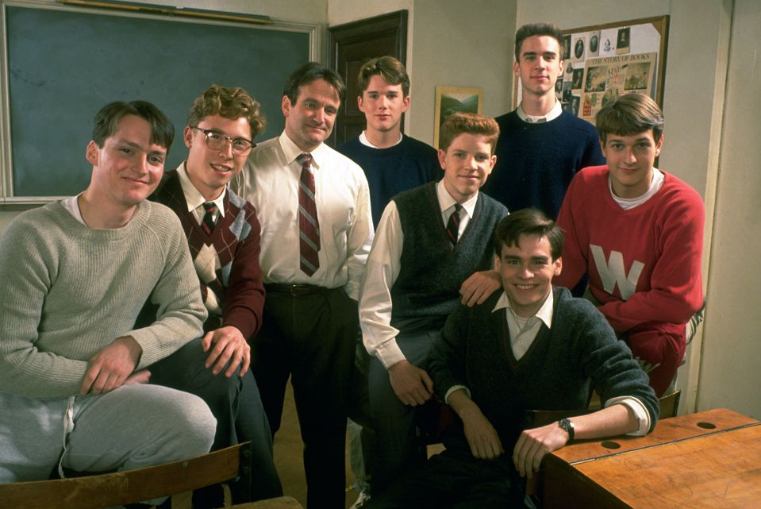

O filme Dead Poets Society, lançado em 1989 e realizado por Peter Weir, conta a história de um grupo de alunos de uma escola bastante tradicional que conhece John Keating, um professor de inglês com métodos de ensino diferentes. Através da poesia, Keating incentiva os alunos a pensarem por si próprios, a questionarem as regras e a aproveitarem a vida, transmitindo a filosofia "Carpe Diem". Inspirados pelo professor, os alunos recriam o Clube dos Poetas Mortos, onde partilham poemas e expressam os seus sentimentos. Ao longo do filme, descobrem as suas paixões e enfrentam conflitos entre os seus sonhos e as expectativas dos outros. O filme transmite mensagens importantes sobre a liberdade, a amizade, a individualidade e a importância de lutar pelos nossos sonhos.

A expressão latina "Carpe Diem" significa "aproveita o dia". Esta ideia representa a importância de dar valor aos pequenos momentos, aproveitar as oportunidades e compreender que o tempo é limitado. No filme, simboliza a necessidade de viver de forma autêntica, em vez de seguir apenas aquilo que a sociedade espera de nós. É um convite a construir uma vida com significado e não desperdiçar as oportunidades que surgem.
Caso tenhas interesse em assistir ao filme, carrega no seguinte link: Ver Filme.